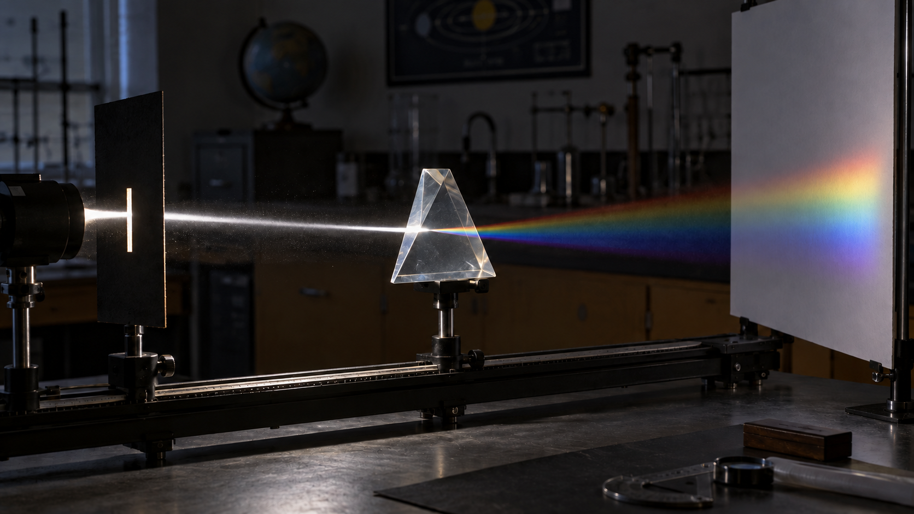
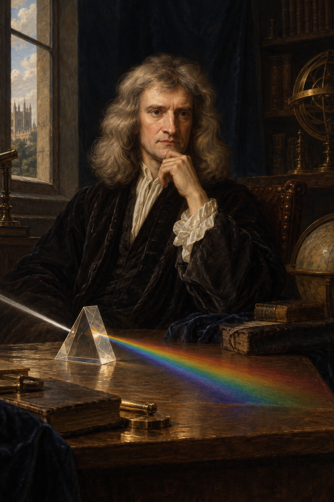
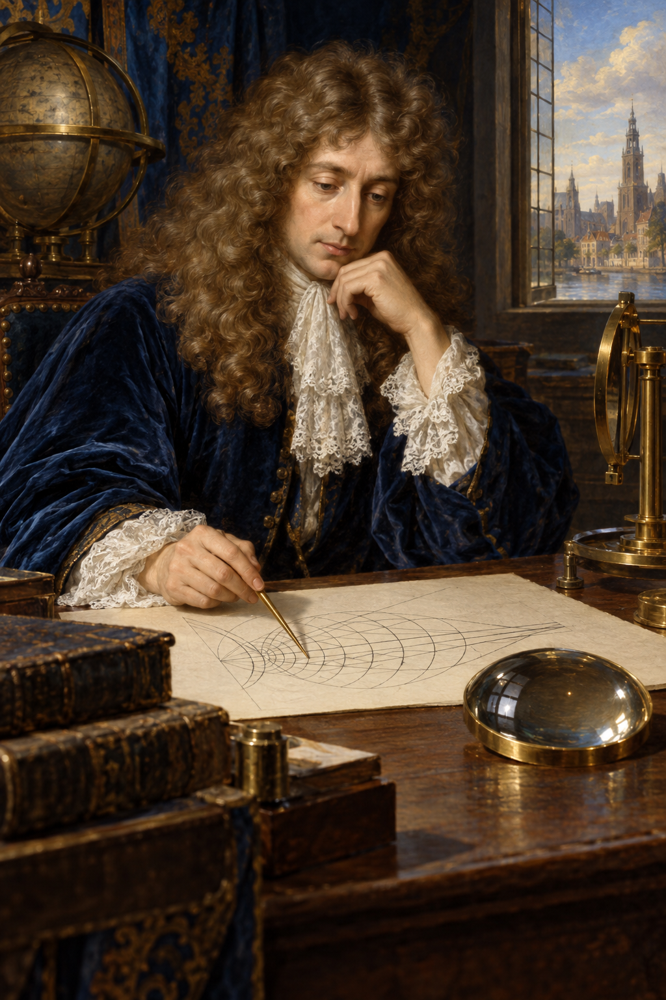
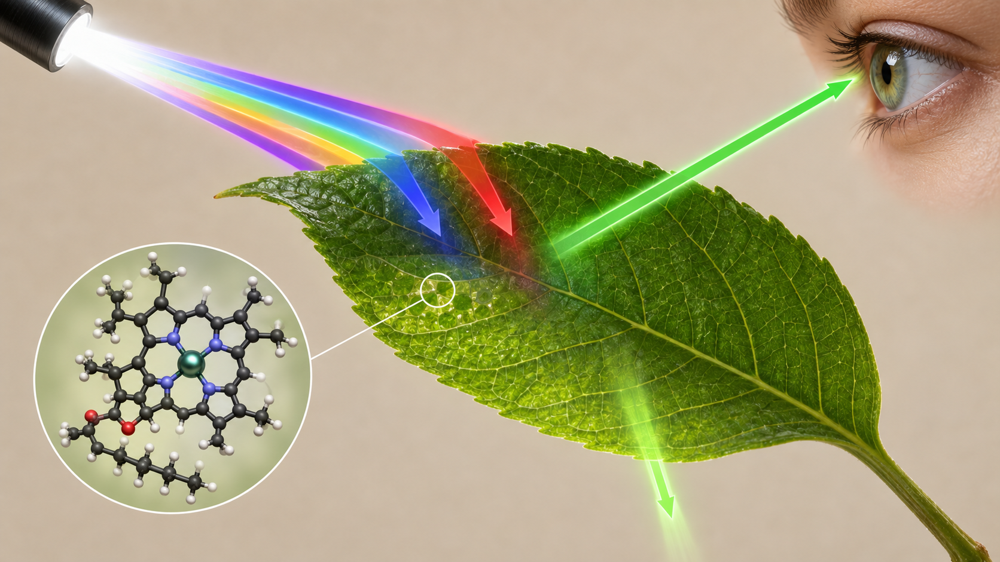
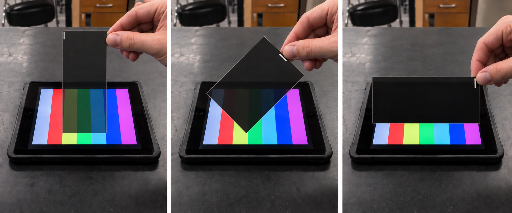
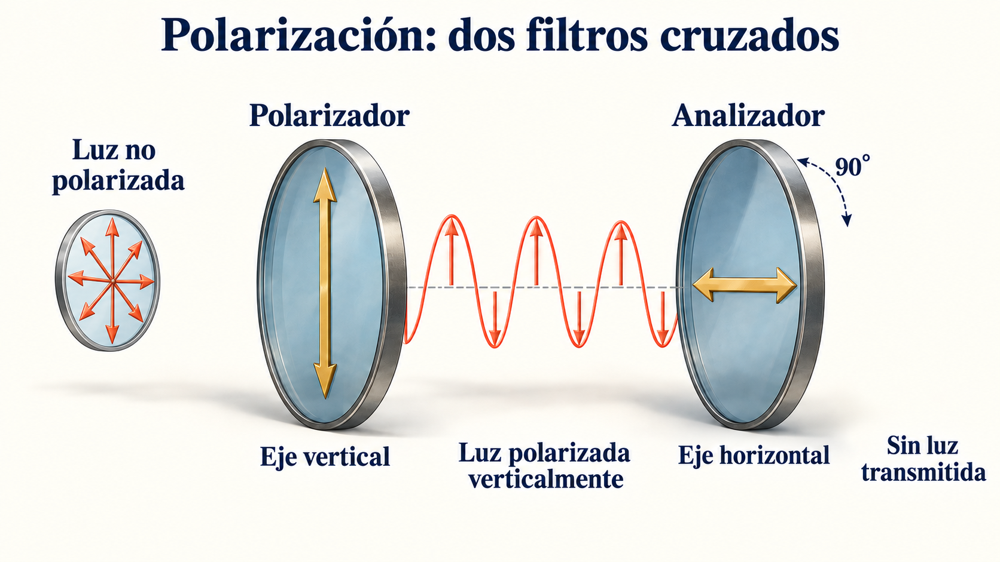
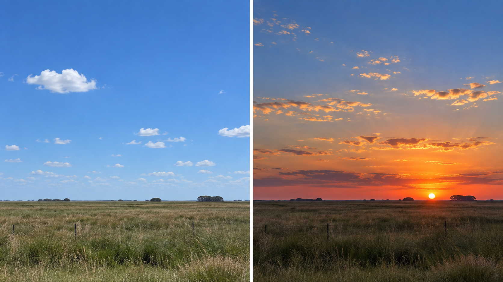

Sistemas Multi Física · Profesor Javier Pereyra
Ondas de luz: de Newton y Huygens a Young
¿La luz viaja como corpúsculos o como onda? Usaremos reflexión, refracción, polarización e interferencia para poner a prueba los modelos.
1 Punto de partida: luz no es sonido
En la clase anterior, el sonido nos permitió estudiar una onda mecánica: en el aire se propaga por compresiones y rarefacciones y necesita materia. La luz, en cambio, es una onda electromagnética transversal. Puede viajar en el vacío: desde el Sol hasta la Tierra no hay aire que vibre.
Sonido en el aire
Mecánica y longitudinal. Las moléculas de aire oscilan aproximadamente en la misma dirección en que avanza el sonido. Sin medio material, no se propaga.Luz visible
Electromagnética y transversal. Cambian los campos eléctrico \(\vec E\) y magnético \(\vec B\), perpendiculares entre sí y a la dirección de avance. Se propaga en el vacío a \(c\).Experimento fotorealista · prisma

Animación 1 · prisma y dispersión
2 Dos modelos históricos para una misma pregunta
En el siglo XVII no se sabía qué era la luz. Newton y Huygens no discutían por capricho: cada uno propuso un modelo para explicar fenómenos observables. Los dos aportaron ideas importantes, pero ninguno es la explicación actual completa.

Isaac Newton (1642–1727)
Modelo corpuscularAsoció la luz con corpúsculos que viajan en línea recta. El modelo ayudaba a imaginar sombras nítidas, reflexión y refracción, aunque predecía incorrectamente que la luz debería ir más rápido en medios más densos.

Christiaan Huygens (1629–1695)
Modelo ondulatorioPropuso que la luz se propaga como una perturbación. Su principio permite construir frentes de onda y explicar geométricamente reflexión y refracción.
Las imágenes son recreaciones didácticas generadas para esta clase, no fotografías históricas.
2.1. Newton: el experimento crucial sobre los colores
Pregunta: ¿el prisma produce los colores o separa componentes de la luz blanca? La dispersión con un solo prisma, mostrada en el video inicial, plantea el problema; el experimentum crucis va más allá.
- Un primer prisma dispersa la luz solar.
- Dos pantallas con pequeños orificios delimitan el recorrido. Al girar el primer prisma, se seleccionan sucesivamente distintas partes del espectro.
- Un segundo prisma, fijo, refracta esa luz: los distintos colores presentan desviaciones diferentes aun con la misma dirección de incidencia.
Para pensar: ¿qué permite comprobar el segundo prisma que no permite concluir la simple observación de un espectro?
2.2. ¿Por qué los materiales se ven de colores?
La luz blanca contiene muchas longitudes de onda visibles. Cuando llega a un material, una parte puede ser absorbida, otra reflejada y otra transmitida. El color que percibimos depende principalmente de la luz que finalmente llega a nuestros ojos, por eso también cambia con la iluminación.
Color de una hoja · absorción selectiva

Objeto blanco
Refleja o dispersa una fracción amplia de las longitudes de onda visibles.
Objeto negro
Absorbe gran parte de la luz visible y transforma buena parte de esa energía en energía interna.
Objeto rojo
Bajo luz blanca refleja relativamente más rojo y absorbe buena parte de los otros colores.
Hoja verde
La clorofila absorbe con fuerza en las zonas azul-violeta y roja; llega a nuestros ojos relativamente más verde.
3 Reflexión: cambiar de dirección sin cambiar de medio
Cuando un rayo llega a una superficie reflectante y permanece en el mismo medio, se produce reflexión. El ángulo se mide siempre respecto de la normal, una recta perpendicular a la superficie; no respecto de la superficie.
Animación 2 · reflexión y refracción
Rango angular: medidos desde la normal, \(0^\circ\leq\theta_i\leq90^\circ\). A \(0^\circ\) la incidencia es perpendicular; a \(90^\circ\) el rayo llega rasante a la superficie.
4 Refracción: ¿qué cambia al pasar de un medio a otro?
Al pasar de aire a agua o vidrio, una parte de la luz normalmente se refleja y otra se transmite. La transmitida cambia de velocidad porque interactúa de manera diferente con el medio. Si llega oblicuamente, también cambia de dirección: eso es refracción.
4.1. Un caso concreto: el lápiz que parece quebrado
Experiencia cotidiana · lápiz dentro de un vaso
1 · De dónde sale la luz
La luz de la habitación se refleja en cada punto del lápiz. Los rayos de la parte sumergida viajan primero por el agua.
2 · Qué ocurre en la superficie
Al pasar de agua, \(n\approx1{,}333\), a aire, \(n\approx1{,}000\), aumentan \(v\) y \(\lambda\), la frecuencia permanece constante y el rayo se aleja de la normal.
3 · Qué interpreta el ojo
El cerebro prolonga hacia atrás los rayos recibidos como si hubieran viajado en línea recta. Por eso ubica la parte sumergida en una posición aparente más cercana a la superficie.
4 · Por qué parece quebrado
La parte que está en el aire se observa casi en su posición real; la parte sumergida aparece desplazada. Ambas imágenes no se alinean en la superficie.
Ejemplo con Snell: un rayo procedente del lápiz llega desde el agua a la superficie con \(\theta_1=30^\circ\), medido respecto de la normal.
Datos: \(n_1=1{,}333\), \(n_2=1{,}000\).
Cálculo: \(1{,}333\sin 30^\circ=1{,}000\sin\theta_2\), entonces \(\theta_2\approx41{,}8^\circ\).
Interpretación: al salir al aire, el rayo forma un ángulo mayor con la normal. El ojo lo prolonga hacia atrás y construye una imagen virtual desplazada.
El índice \(n\) compara la velocidad en el vacío \(c\) con la velocidad en el medio \(v\). Un índice mayor significa menor velocidad. La ley de Snell relaciona los ángulos con los índices de los dos medios.
Cuadro de consulta: índices de refracción
Valores aproximados para luz de longitud de onda en el vacío de 589 nm (amarilla). El índice \(n\) no tiene unidad. Usá el valor del medio de origen como \(n_1\) y el del medio de destino como \(n_2\).
| Medio (referencia) | Índice \(n\) | Velocidad \(v=c/n\) | Lectura |
|---|---|---|---|
| Vacío | 1 exacto | 299 792 458 m/s | Velocidad máxima de la luz. |
| Aire (0 °C, 1 atm) | 1,000293 | \(2,997\times10^8\) m/s | Casi igual que en el vacío. |
| Dióxido de carbono (0 °C, 1 atm) | 1,00045 | \(3,00\times10^8\) m/s | Muy próximo al aire; la velocidad está redondeada. |
| Hielo (0 °C) | 1,309 | \(2,29\times10^8\) m/s | Índice menor que el agua líquida. |
| Agua dulce (20 °C) | 1,333 | \(2,25\times10^8\) m/s | La luz viaja más lentamente. |
| Etanol (20 °C) | 1,361 | \(2,20\times10^8\) m/s | Índice mayor que el agua. |
| Fluorita (20 °C) | 1,434 | \(2,09\times10^8\) m/s | Material usado en óptica. |
| Sílice fundida (20 °C) | 1,458 | \(2,06\times10^8\) m/s | También llamada cuarzo fundido. |
| Glicerina (20 °C) | 1,473 | \(2,04\times10^8\) m/s | Permite comparar líquidos transparentes. |
| Poliestireno (20 °C) | 1,49 | \(2,01\times10^8\) m/s | Valor para material transparente compacto. |
| Vidrio crown | 1,520 | \(1,97\times10^8\) m/s | Usado como valor escolar de referencia. |
| Cloruro de sodio cristalino (20 °C) | 1,544 | \(1,94\times10^8\) m/s | Sal en cristal; no agua salada. |
| Vidrio flint (20 °C) | 1,66 | \(1,81\times10^8\) m/s | Mayor índice que el vidrio crown de referencia. |
| Diamante | 2,419 | \(1,24\times10^8\) m/s | Índice alto: gran desviación y brillo. |
| Parámetro al cruzar una frontera estacionaria | ¿Cambia? | Por qué |
|---|---|---|
| Frecuencia \(f\) | No | La fuente fija el ritmo de oscilación. |
| Período \(T=1/f\) | No | Si \(f\) no cambia, \(T\) tampoco. |
| Velocidad \(v=c/n\) | Sí | Depende del medio. |
| Longitud de onda \(\lambda=v/f\) | Sí | Con la misma \(f\), sigue el cambio de \(v\). |
| Dirección | Puede cambiar | Solo si la incidencia es oblicua y los índices son distintos. |
| Intensidad | Puede cambiar | Puede haber reflexión parcial, transmisión y absorción. |
5 El ángulo crítico: el “ángulo máximo” de la refracción
Cuando la luz intenta salir de un medio de mayor índice a otro de menor índice, se aleja de la normal. Hay un límite: el ángulo crítico \(\theta_c\). Es el ángulo de incidencia para el cual el rayo refractado sale rasante a la superficie, es decir, a \(90^\circ\) de la normal.
Animación 3 · ángulo crítico
\(\theta_c=\sin^{-1}(1,000/1,333)\approx48,6^\circ\).
\(\theta_c=\sin^{-1}(1,000/1,520)\approx41,1^\circ\).
6 Polarización: una firma de las ondas transversales
La dirección de polarización se define por la oscilación del campo eléctrico \(\vec E\). La luz de una lámpara suele ser no polarizada: contiene muchas direcciones de oscilación transversales. Un filtro Polaroid transmite preferentemente la componente paralela a su eje de transmisión.
Giro de un Polaroid · recreación fotorealista

Animación 4A · el oscurecimiento ocurre solo bajo la lámina
Animación 4B · polarización paso a paso

7 Young: doble rendija e interferencia
En 1801, Thomas Young presentó evidencia de que la luz puede interferir. En la versión escolar, una luz coherente llega a dos rendijas cercanas. Cada rendija actúa como fuente de ondas; en la pantalla se observan franjas claras y oscuras alternadas.
Animación · Young: de las ondas a las franjas
8 La luz en la naturaleza: arcoíris y colores del cielo
8.1. ¿Cómo se forma el arcoíris?
Cada gota desvía la luz solar. Como el índice del agua depende del color, las distintas componentes no salen en la misma dirección. Para el arco primario, el recorrido es:
- Entrada: la luz se refracta y comienza a separarse en colores.
- Interior: una parte se refleja en la cara posterior de la gota.
- Salida: se refracta nuevamente; ciertos rayos llegan al observador.
Muchas gotas situadas en las direcciones adecuadas forman el arco aparente. El rojo se observa a unos 42° respecto de la dirección opuesta al Sol; no es el ángulo crítico del agua. Un arco secundario implica dos reflexiones internas y muestra los colores invertidos. Fuente: NOAA/National Weather Service.
8.2. ¿Por qué el cielo es azul y el atardecer rojizo?

Infografía animada · dispersión de Rayleigh
Durante el día
Las moléculas del aire dispersan la luz hacia distintas direcciones. Las longitudes de onda cortas, como el azul, se dispersan más eficazmente que el rojo: parte de esa luz llega a nuestros ojos desde el cielo. Es la dispersión de Rayleigh.Al amanecer y al atardecer
Con el Sol bajo, su luz atraviesa un trayecto atmosférico más largo. Se desvía fuera del haz directo una mayor proporción de azul; en la luz que continúa hacia nosotros predominan tonos amarillos, anaranjados y rojos.Ley de Rayleigh: vale para partículas mucho más pequeñas que \(\lambda\), como las moléculas del aire. La intensidad dispersada crece fuertemente al disminuir la longitud de onda. Comparando violeta (\(\approx400\ \text{nm}\)) con rojo (\(\approx700\ \text{nm}\)): \((700/400)^4\approx9,4\); el violeta se dispersa casi 10 veces más que el rojo. Esta ley requiere partículas pequeñas frente a \(\lambda\): no describe la dispersión en gotas de nube, mucho más grandes, donde el mecanismo dominante es distinto (dispersión de Mie) y por eso las nubes se ven blancas.
¿Por qué no violeta? También se dispersa mucho, pero intervienen el espectro solar y la sensibilidad de nuestros ojos, mayor al azul que al violeta. ¿Y las nubes blancas? Sus gotas y cristales dispersan un amplio conjunto de colores; al mezclarse, los percibimos blancos. Las nubes espesas pueden verse grises porque llega menos luz desde su interior. Fuente: NWS, cielo azul; NASA Space Place, luz y atmósfera.
Para observar y explicar: mirá las imágenes y respondé: ¿dónde está el Sol respecto del observador del arcoíris? ¿Por qué el cielo puede ser azul lejos del mar? ¿Por qué el atardecer cambia de color aunque la fuente siga siendo el Sol?
Experiencia breve: iluminá de costado un recipiente transparente con agua usando una linterna LED blanca. Compará la luz lateral y la transmitida; agregá unas gotas de leche y repetí. Las partículas permiten ver luz dispersada. Es una analogía cualitativa: las partículas de leche no son moléculas de aire y no reproducen exactamente la atmósfera. No uses un láser ni mires directamente al Sol.
9 Ejemplos resueltos
A. Aire → agua: un rayo llega desde el aire con \(\theta_1=45,0^\circ\). Tomamos \(n_\text{aire}=1,000\) y \(n_\text{agua}=1,333\).
Fórmula: \(n_1\sin\theta_1=n_2\sin\theta_2\).
Reemplazo: \(\sin\theta_2=(1,000/1,333)\sin45,0^\circ=0,530\).
Resultado: \(\theta_2\approx32,0^\circ\). Se acerca a la normal porque entra a un medio de índice mayor.
B. Ángulo crítico vidrio → aire: \(n_1=1,520\), \(n_2=1,000\).
Fórmula: \(\theta_c=\sin^{-1}(n_2/n_1)\).
Resultado: \(\theta_c=\sin^{-1}(1,000/1,520)\approx41,1^\circ\). Para una incidencia de \(50^\circ\), hay reflexión interna total.
C. Longitud de onda: una luz de \(600\ \text{nm}\) en aire entra al agua. \(f\approx c/\lambda=5,00\times10^{14}\ \text{Hz}\).
En agua: \(\lambda=v/f=(2,25\times10^8)/(5,00\times10^{14})=4,50\times10^{-7}\ \text{m}=450\ \text{nm}\). La frecuencia no cambia; la longitud de onda disminuye.
10 Actividades y problemas
- Un rayo incide sobre un espejo a \(37^\circ\) respecto de la normal. Hallá \(\theta_r\).
- Un rayo forma \(25^\circ\) con la superficie de un espejo. Hallá el ángulo de incidencia y el de reflexión.
- Explicá dos diferencias entre el sonido en el aire y la luz. Incluí qué tipo de onda es cada una y si puede viajar en el vacío.
- Usá Snell para aire → agua con \(\theta_1=45^\circ\) y \(n_\text{agua}=1,333\). Calculá \(\theta_2\).
- Un rayo pasa de agua (\(n=1,333\)) a vidrio crown (\(n=1,520\)) con \(\theta_1=30^\circ\). Calculá \(\theta_2\) y decidí si se acerca o se aleja de la normal.
- Calculá la velocidad de la luz en etanol, \(n=1,361\).
- Luz de \(600\ \text{nm}\) en aire entra al agua. Calculá \(f\) y \(\lambda\) en el agua. ¿Qué magnitud no cambió?
- Calculá el ángulo crítico agua → aire. Indicá qué ocurre a \(40^\circ\), \(48,6^\circ\) y \(55^\circ\).
- ¿Existe ángulo crítico para aire → vidrio? Justificá usando los índices y el sentido del paso.
- Llega luz no polarizada de intensidad \(I\) a un Polaroid y luego a un segundo Polaroid colocado a \(60^\circ\). Idealmente, ¿qué intensidad queda después del primer filtro y cuál después del segundo?
11 Preguntas para afianzar
1. ¿Por qué un lápiz dentro de un vaso con agua parece “quebrado”?
2. Si frecuencia y período no cambian al refractarse, ¿por qué cambia la longitud de onda?
3. ¿Qué observación del experimento de Young no espera un modelo corpuscular simple?
4. ¿Por qué la polarización ayuda a reconocer que la luz es una onda transversal?
5. ¿Qué afirmación es más precisa: «la luz se frena» o «la luz se propaga con menor velocidad de fase en el medio»? Explicá con tus palabras.
6. Una hoja verde se ilumina primero con luz blanca y después solo con luz roja. ¿En cuál de las dos situaciones se verá verde? Justificá a partir de las longitudes de onda disponibles.
12 Fuentes para seguir investigando
- The Newton Project: comunicación original sobre luz y colores y el experimentum crucis (1672).
- BBC Mundo: lectura complementaria propuesta por el docente sobre Newton y los colores.
- Biblioteca del Congreso: Opticks de Newton (1704).
- Smithsonian Libraries: Traité de la lumière de Huygens (1690).
- Royal Society: Bakerian Lecture de Thomas Young (1802).
- NIST: valor exacto de la velocidad de la luz en el vacío.
- OpenStax: refracción, índices y reflexión interna total y polarización.
- OpenStax: color y visión y pigmentos fotosintéticos y estructura de la clorofila.
- Alonso, M. y Finn, E. J. Física, Volumen II: Campos y ondas. Fondo Educativo Interamericano (referencia clásica en cursos universitarios de física de Argentina y la región; capítulos de óptica geométrica y ondulatoria).
- Departamento de Física, FCEN-UBA: guía de laboratorio sobre reflexión, refracción y la ley de Snell.
- NOAA/NWS: formación del arcoíris y NASA Space Place (en español): por qué el cielo es azul.